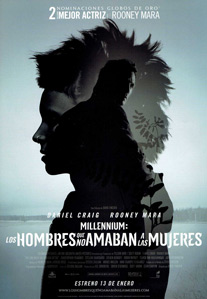

Millennium: los hombres que no amaban a las mujeres
Mikael Blomkvist, director junto con Erika Verger de la revista sueca Millennium, es condenado por difamación tras acusar al financiero Hans-Erik Wennerström de haber utilizado fondos públicos para traficar con armas.
Para no perjudicar a la revista deja su trabajo, y aprovechando su situación Henrik Vanger, director de la Corporación Vanger lo contrata para, oficialmente, escribir su biografía, aunque lo que realmente desea es que él investigue la desaparición de su sobrina nieta Harriet, de cuya educación y de la de su hermano Martin se hizo él cargo tras la muerte de su padre, su sobrino Gottfried.
Henrik sospecha que la asesinó alguien de su familia en 1966, y él debe descubrir quién lo hizo, debiendo trasladarse para ello a una casita en el muelle de la isla propiedad de la familia, prometiéndole además de un excelente sueldo, información sobre Wennerström.
Deberá investigar a toda la malavenida familia. Hermanos y sobrinos de Henrik, entre ellos su hermano Harald, que es nazi, como lo fue el abuelo de Harriet.
Esta desapareció el día de la fiesta de otoño y saben que no salió de la isla porque el acceso a la misma estuvo cerrado por un accidente, recibiendo desde entonces y en su cumpleaños, un cuadro de flores igual a los que ella le regalaba mientras vivió.
Mikael comienza a examinar la numerosa documentación de Henrik, hablando con Martin, actual director de la corporación y con Cecilia, hija de Harald, descubriendo en los diarios de Harriet las iniciales de varias personas seguidas de unos números que la policía no descifró.
Viaja además a Londres para hablar con Anita, hermana de Cecilia y amiga de Harriet.
Entretanto los Vanger entran a formar parte del accionariado de Millennium, ya que la revista está al borde de la quiebra tras el asunto Wennerström.
Una visita de su hija le abre los ojos sobre las notas del diario de Harriet, que descubre se corresponden con citas bíblicas del Levítico en las que se señala las formas de muerte de mujeres adúlteras o prostitutas, comprobando que hubo una serie de asesinatos en el pasado, cuyas muertes no se esclarecieron, solicitando que le asignen un ayudante.
Henrik es internado muy grave, pero Mikael sigue investigando con la ayuda de Lisbeth Salander una joven hacker que viste ropa gótica, tiene cresta, y numerosos piercings y tatuajes y que elaboró para Vanger el informe sobre la idoneidad de Mikael para el trabajo.
Lisbet, que con 12 años trató de quemar a su padre vivo tiene asignado un tutor, aunque cuando este sufre un derrame cerebral lo sustituye Nils Bjurman que le asignará una exigua paga mensual, debiendo justificar los gastos que realice y que, para no emitir informes negativos sobre ella le obliga a hacerle una felación la primera vez que le pide dinero, atándola y abusando analmente de ella en su segunda visita.
En su siguiente visita será Lisbeth la que lo deje sin sentido y lo atará para mostrarle que grabó todo lo ocurrido en su anterior visita, tras lo que le tatúa en el pecho que es un cerdo violador, señalándole que a partir de ese momento le permitirá administrar su dinero y sus informes serán favorables, pues de lo contrario difundirá el video.
Lisbeth encuentra a las muertas que figuraban en el listado de Harriet y algunas más, muertas también según versículos del Levítico, todas con nombres bíblicos.
Investigando las fotos del periódico local del día de la desaparición de Harriet, descubren que en una de ellas aparece una mujer haciendo fotos hacia el lado hacia el que esta parecía mirar aterrorizada, por lo que, tras identificarla acude a visitarla obteniendo copias de aquellas fotos, en las que se ve a un hombre no distinguible.
Mikael es atacado por un tirador que le hiere en la cara, pese a lo cual continua investigando, pidiendo permiso para investigar los archivos de la compañía, lo que hará Lisbeth que comprueba que los asesinatos ocurrieron en los lugares y en los momentos en que estaba allí Gottfried, aunque continuaron tras su muerte.
Mikael visita a Harald, el cual le deja ver las fotografías que sacó el día del accidente, pudiendo así identificar a Martin en las fotos de la mujer que visitó.
Acude por ello a su casa a buscar pistas, pero llega este, que lo invita a una copa tras lo que lo lleva a una sala donde lo ata, confesándole que allí es donde tortura a las mujeres de las que se deshacía tirándolas al mar, lo mismo que hará con él.
Lisbeth también se da cuenta de que es Martin el asesino y regresa para avisar a Mikael, teniendo la suerte de que el de seguridad que debía avisar a Martin cuando ella saliera del archivo no estaba cuando se marchó, llegando a tiempo de sorprender a Martin, que, logra huir perseguido de cerca por Lisbeth que ve cómo su coche vuelca y explota con él dentro.
Resuelto el misterio de los asesinatos, Mikael continúa investigando la desaparición de Harriet, para lo que acude de nuevo a ver a Anita, esperando que al comunicarle la muerte de Martin hable con Harriet y poder así localizarla, aunque no lo consigue, llegando finalmente a la conclusión de que Anita es en realidad Harriet tras comprobar que Anita y su marido murieron 20 años atrás en un accidente.
Harriet le explica que vivía aterrorizada, pues su padre la violaba, hasta que una noche, en que él estaba borracho acabó con él, aunque la escena fue observada por Martin, que, a partir de ese día comenzó a hacer lo mismo que su padre.
Cuando su hermano fue enviado a un internado en Upsala pensó que todo había terminado, pero cuando lo vio de nuevo en el pueblo comprendió que nunca cesaría su tortura, por lo que decidió huir con la ayuda de Anita, que la ayudó a esconderse, y al día siguiente la sacó de la isla en el maletero de su coche.
Resuelto el misterio, Henrik entrega a Mikael lo que le prometió. Tiene archivos que demuestran que Wennerström, antiguo empleado suyo se quedó con dinero de la corporación para fundar su propio grupo empresarial, lo cual no le sirve para nada, pues el delito ya prescribió, pero Lisbeth, que lo investigó por su cuenta sí tiene algo. El acceso a sus ordenadores y los de sus contables le permite saber que esconde la fortuna obtenida con sus actividades ilegales en las Caimán, y lo publican sabiendo que él lo negará, pero que la policía y el fisco lo investigarán y lograrán demostrar su culpabilidad.
Lisbeth le pide un préstamo a Mikael y viaja a Zurich tras teñirse y comprar ropa elegante y una vez allí procede a sacar el dinero de las cuentas de las islas Caimán de Wennerström, que convertirá en bonos, y su foto aparecerá en los noticiarios como la cómplice que ayudó a Wennerström a sacar su dinero y dispersarlo, mientras llegan noticias de la desaparición de este de su país para no ser detenido, llegando noticias poco después del asesinato de Wennerström en Marbella.
Lisbeth, que durante su colaboración con Mikael se acostó varias veces con él se propone hacerle un regalo de Navidad, aunque lo ve con Erika y desiste de hacerlo, marchándose nuevamente solo en su moto.